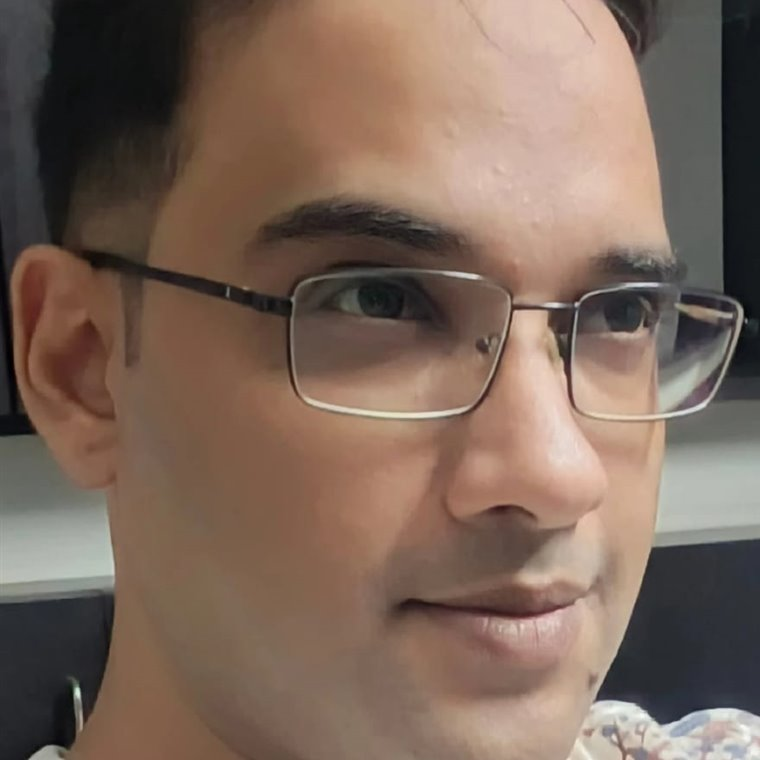

The founder
Vikram Bhargava · Founder & Managing Director

Vikram founded Teatalz House Of Rume Private Limited and leads it. He created Ru — the character at the centre of everything we build — and makes the product and pricing decisions himself.
An operator who writes code
Roughly fourteen years across edtech, marketing and sales leadership, with P&L ownership for most of it.
- Saaransh Edusolution Private Limited — founded 2012, building work-readiness and office-management courses.
- Digital Learning Magazine — led marketing.
- Hyderabad Ammonia & Chemicals Private Limited — joined as Marketing & Sales Head and rose to Plant & Sales Head, scaling turnover from ₹8 crore to ₹20 crore while owning P&L, operations and revenue.
He is a builder rather than only a director. A Python certification in 2015 and a genuine liking for the work mean his hands are still on the product. He is also a Level 3 CMT and teaches market analysis for free, because making complicated things usable is the part he enjoys.
Why this company exists
There is a particular kind of question people carry and never ask — about a marriage, a job, a parent's health, a decision that will not wait. In India they surface at one in the morning, half in English and half in Hindi.
Almost everything built to answer them charges by the minute. That single choice shapes everything downstream: the person rushes, shortens the question, skips the follow-up, and leaves before saying the thing they came to say. Then something is sold to them to fix it.
We are building the other version of that. It closes the two largest revenue lines in the category, and we have chosen it anyway.
How the company works
- Small on purpose. One founder, with AI doing work that would have needed a team five years ago. Specialists are engaged as the work requires them rather than hired ahead of it.
- Nothing ships on a guess. Where the software does not know something, it says so. That rule has cost us features, and it is the one we are least willing to bend.
- The uncomfortable half gets written down. Where the evidence argues against us, it goes into the deck rather than out of it.
Get in touch
For partnerships, press, or anything that needs a founder rather than a form: founder@teatalz.com